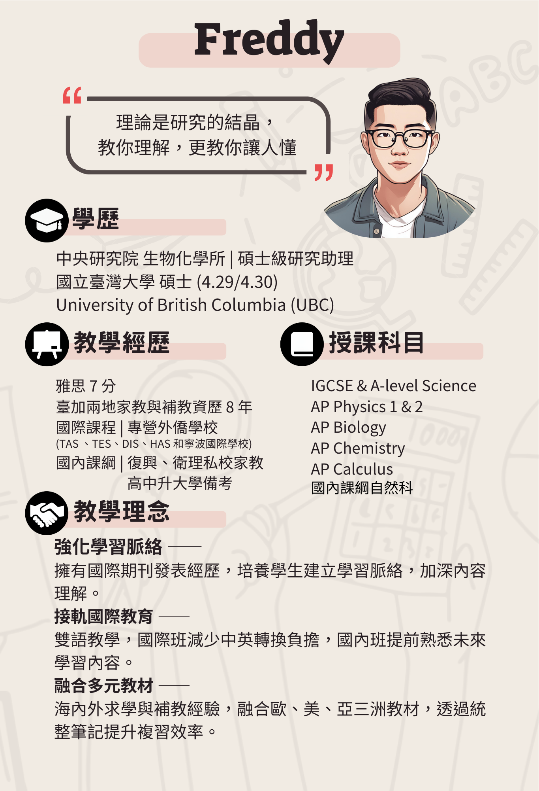
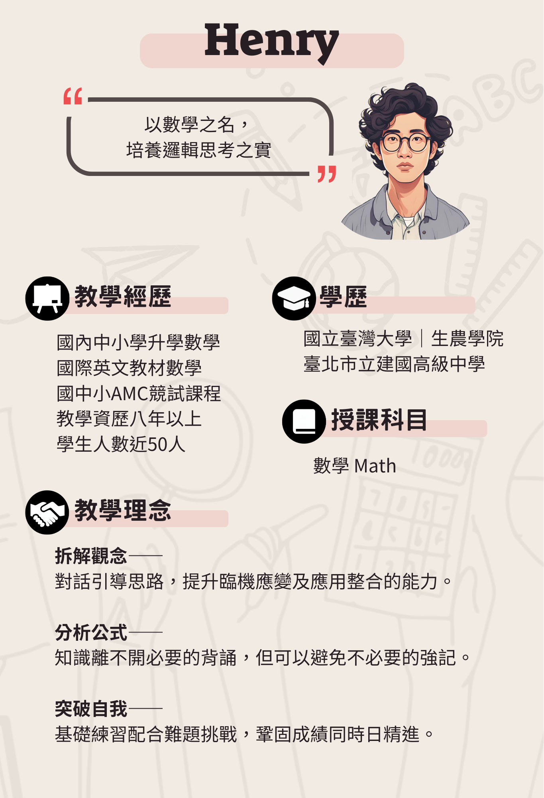
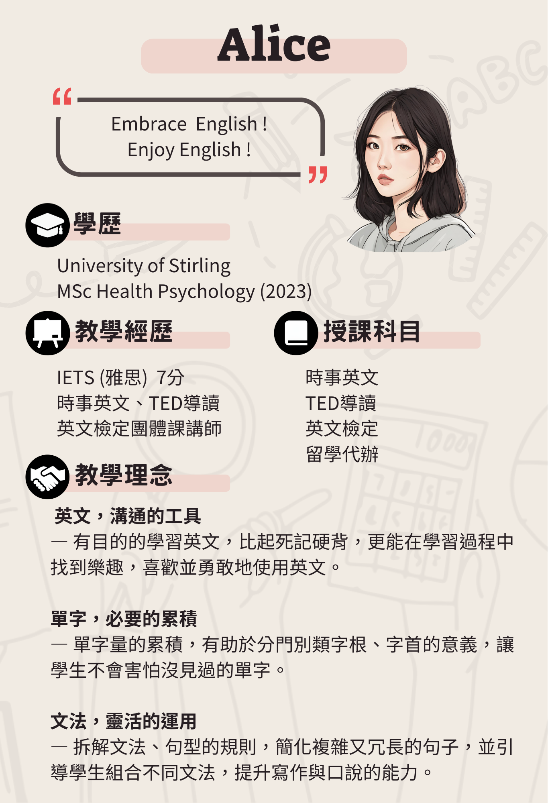
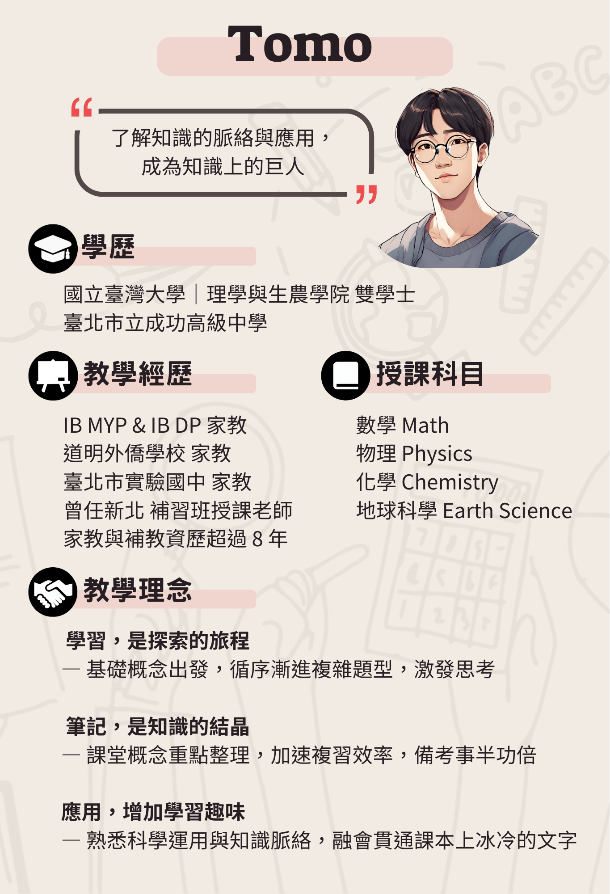
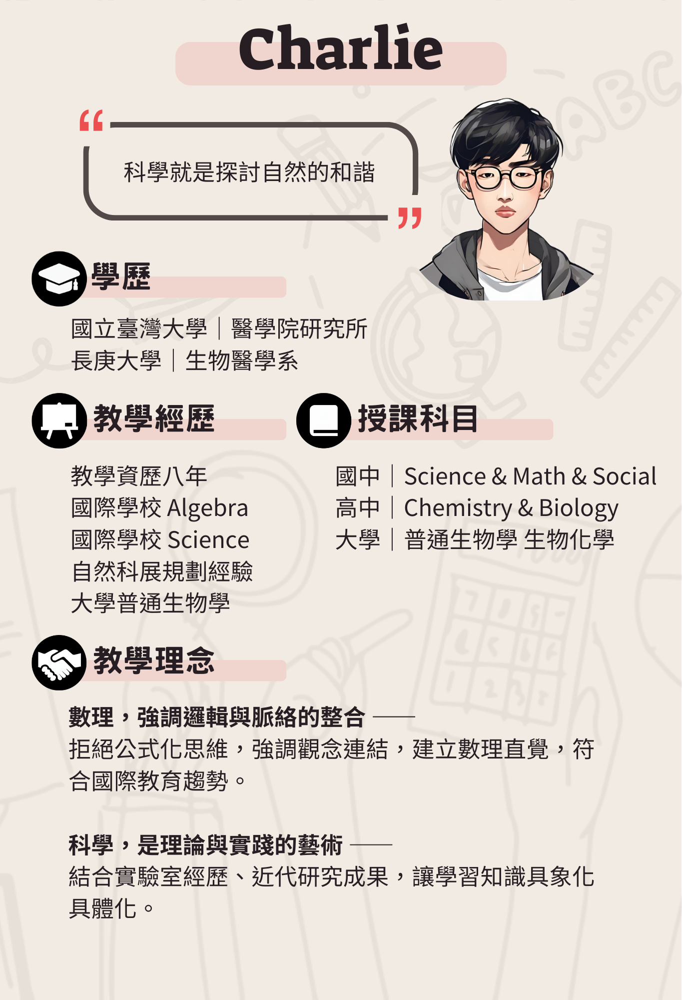
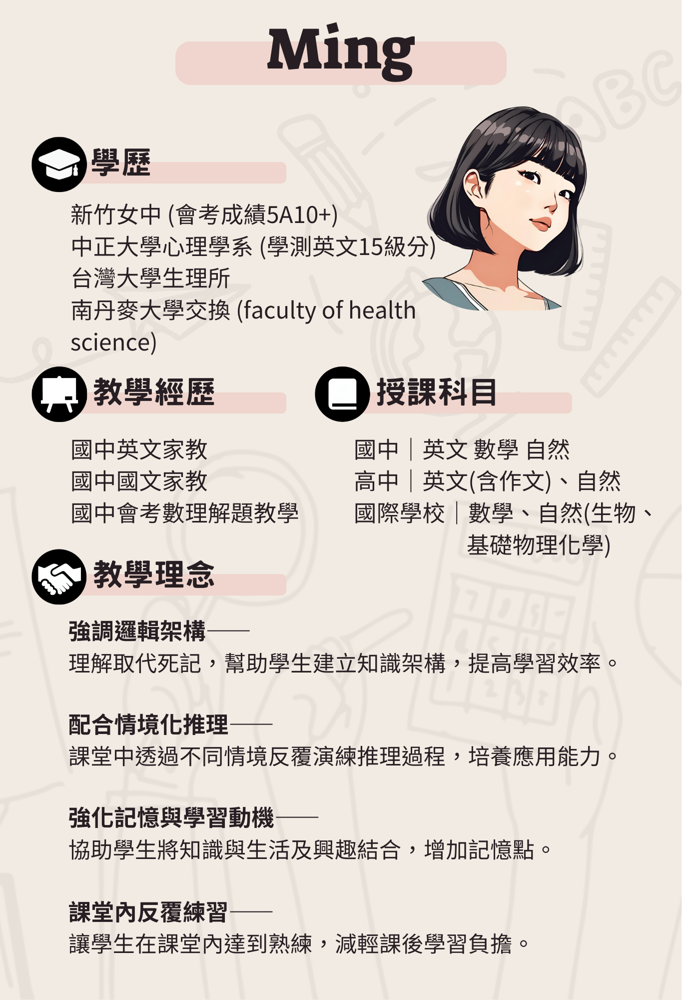

我們是來自台灣大學的家教團隊，致力於提供一對一客製化輔導，協助學生建立自主學習能力。
我們的團員均來自台灣大學，擁有強大的學科專業知識及熱忱。我們深諳各項升學考試的核心邏輯，能提供最精準的點撥，引導學生攻克學習盲點。
因材施教是我們的核心。我們會根據每位學生的理解速度、學習習慣以及學科弱項，量身規劃課程進度與專屬教材，無論是國中、高中或國外學制均能提供補強。
不只是傳授知識，我們更著重教導孩子如何「學會學習」。透過啟發式的問答與學習習慣引導，培養學生的自主學習與邏輯思考能力，為未來長遠學業奠定基石。
透視我們的教學過程，感受清晰且具邏輯的觀念拆解與活潑的教學氛圍。
篩選科目尋找最適合的家教老師，預設顯示所有師資。






關於試教流程、時間調配與學程設計的解答。
填寫線上報名表單，或立即加入我們的 LINE 官方帳號，讓台大頂尖師資引導您走向高分與自主學習！